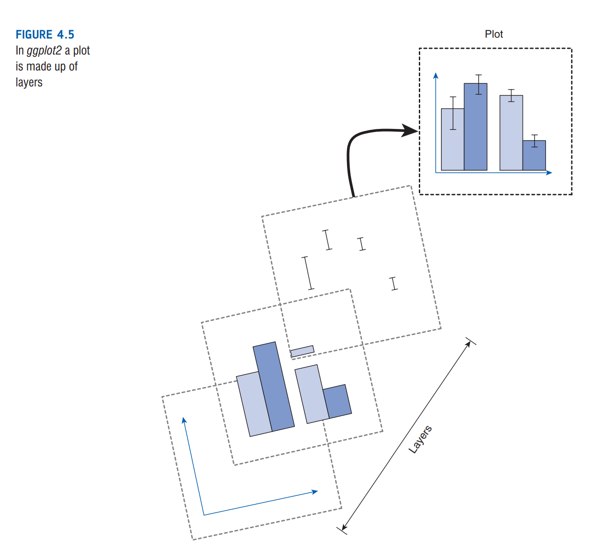
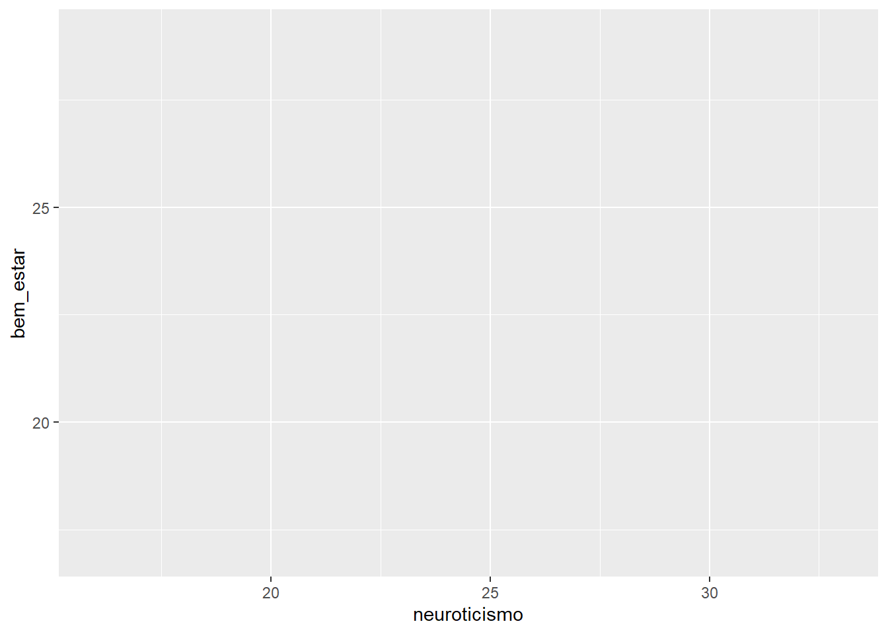
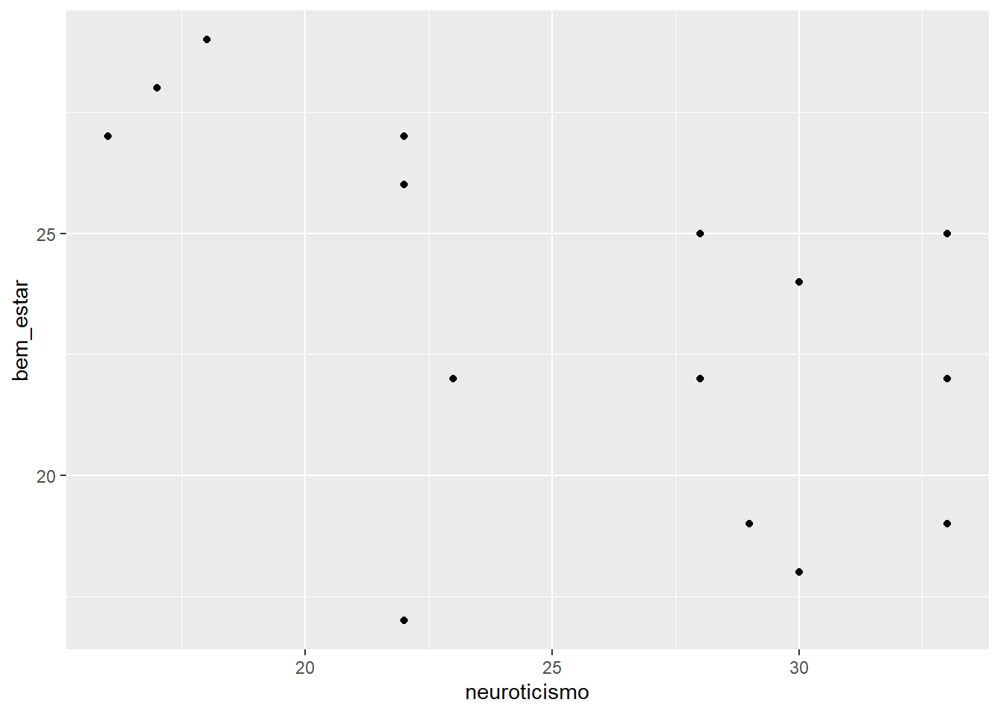
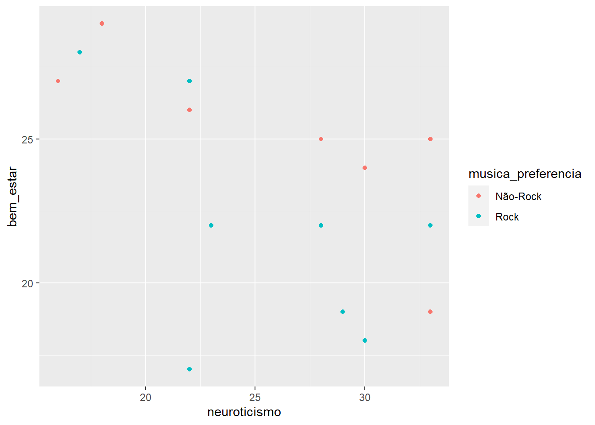
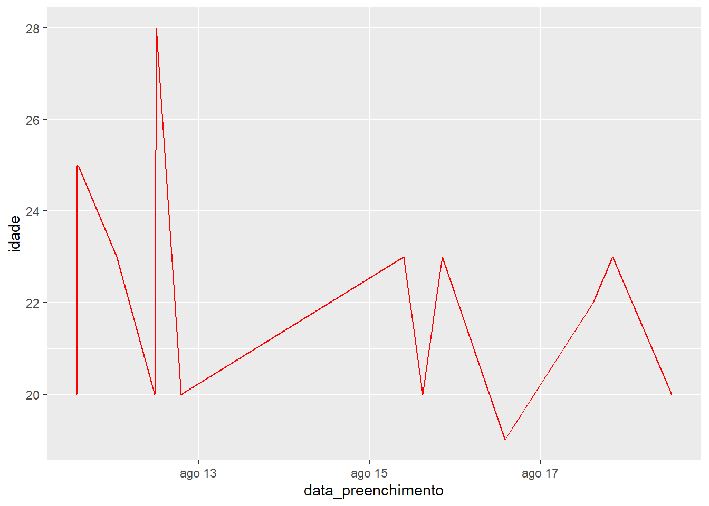
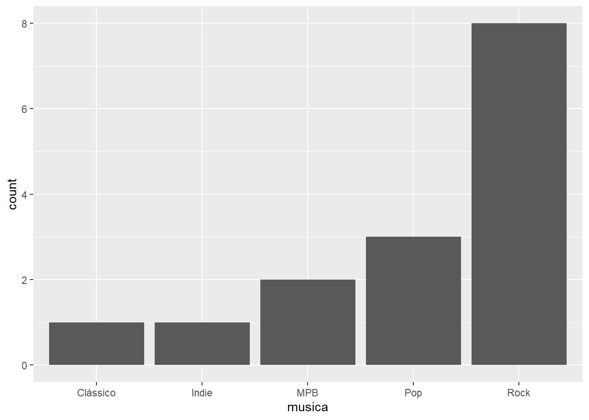
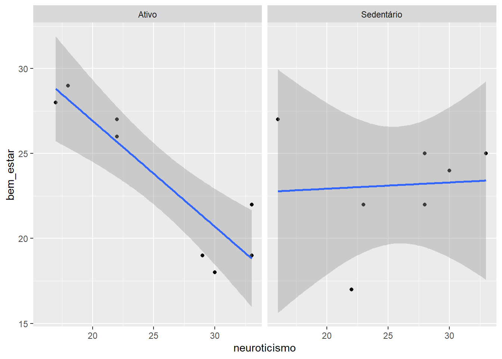
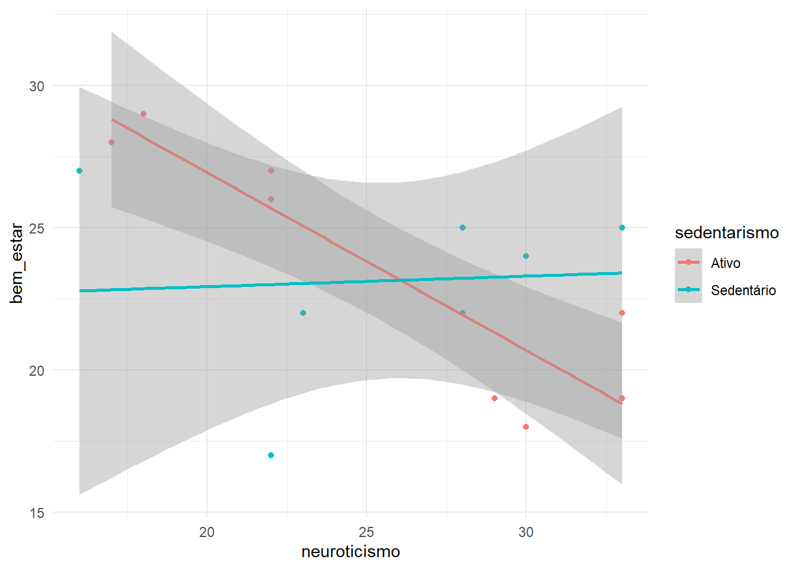
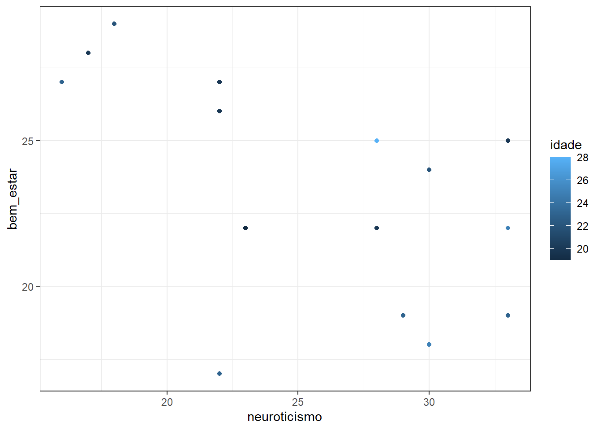
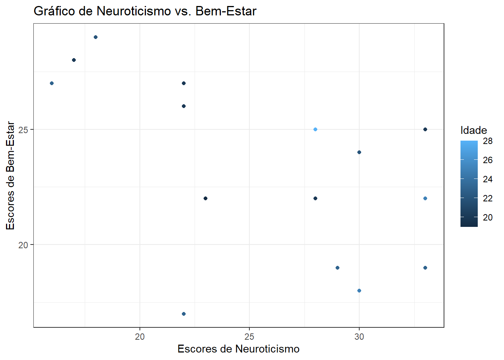

Projetada para criar visualizações de dados de alta qualidade e de maneira intuitiva
Baseado em uma “gramática dos gráficos”, uma abordagem sistemática para criar gráficos desenvolvida por Leland Wilkinson
Permite expressão das intenções de forma clara e concisa
Configurações
Vamos apenas rodar esse código abaixo para poder iniciar nossa aula:
Code
# Carregando pacotes necessárioslibrary(tidyverse)# Carregar o banco de dados processadodf <-read_csv("dados_processados.csv")# Vamos primeiro transformar em fator "cinema", "musica", e "atividade_fisica"levels_ativ_fisica <-c("Não pratico atividade física", "Menos do que três vezes na semana", "Entre três e cinco vezes na semana", "Mais do que cinco vezes na semana")df <- df |>mutate(musica =factor(musica),cinema =factor(cinema),atividade_fisica =factor(atividade_fisica, levels = levels_ativ_fisica , ordered = T)) rm(levels_ativ_fisica)# Tirar colunas que não nos interessam maisdf <- df %>%select(-otimismo:-nervosismo)# Transformar algumas variáveis categóricasdf$musica_preferencia <-ifelse(df$musica =="Rock", "Rock", "Não-Rock")df$cinema_preferencia <-ifelse(df$cinema =="Ficção científica", "Ficção científica", "Não-Ficção científica")df$sedentarismo <-ifelse(df$atividade_fisica =="Não pratico atividade física"| df$atividade_fisica =="Menos do que três vezes na semana", "Sedentário", "Ativo")
Na aula passada, nós já tínhamos gerado alguns gráficos. Hoje nós vamos entender o código por trás deles.
É possível gerar gráficos diretamente com o R base, mas o ggplot2 tem muito mais recursos.
Anatomia de um gráfico
Um gráfico é composto de camadas.
Uma camada pode incluir texto, pontos, linhas, barras, ou qualquer coisa que você quiser.
Percebemos que a primeira camada dessa estrutura são os dados, porém ainda não vinculados a uma formatação visual.
Cada camada gráfica é colocada no topo da outra, como uma transparência.

Geoms e propriedades estéticas
Pense que tudo que você vê no gráfico é um geom (elemento geométrico), que pode ser uma coluna, pontos, linhas, texto, etc.
Cada geom aparece no gráfico conforme suas propriedades estéticas, que incluem a sua localização (coordenadas x e y), as suas cores e seu tamanho.
As propriedades estéticas (aes) podem ser determinadas como a mesma para o gráfico inteiro ou distintas para cada camada do gráfico.
Vamos exemplificar, criando um gráfico que mostre a relação entre neuroticismo e bem-estar.
Para isso, vamos utilizar a função ggplot, e incluir os dados no argumento data, e as propriedades estéticas de todo o gráfico em aes().
g <-ggplot(data = df, aes(x = neuroticismo, y = bem_estar))# Visualizar o gráficog

Opa, parece que não temos nenhuma forma geométrica que represente os dados. Faltou dizer qual é o geom que queremos. No caso, como nós queremos pontos, temos que inserir o argumento geom_point().
g <-ggplot(data = df, aes(x = neuroticismo, y = bem_estar)) +geom_point()# Visualizar o gráficog

Ou seja, geom_point é mais uma camada gráfica, que vai seguir a estética daquilo que está na camada acima.
Nesse caso, as coordenadas x e y são do gráfico todo.
Mas digamos que eu quero dar propriedades específicas para geom_point. Devo, então, inserir as propriedades daquele geom em aes(). No caso abaixo, vou dizer que quero as cores conforme a preferência musical.
g <-ggplot(data = df, aes(x = neuroticismo, y = bem_estar)) +geom_point(aes(color = musica_preferencia))# Visualizar o gráficog

Tipos de geom
Vamos falar dos principais tipos:
geom_bar(): cria uma barra
geom_point(): cria pontos
geom_line(): cria uma linha
geom_boxplot(): cria um boxplot
geom_text(): criar um texto
Perceba que cada geom é seguido por (), o que significa que ele aceita argumentos estéticos. Por exemplo, a cor.
g <-ggplot(data = df, aes(x =data_preenchimento, y = idade)) +geom_line(color ="red")g

Aes
Diferentes propriedades estéticas são necessárias conforme o tipo de geom.
Obrigatório
Opcional
geom_bar
x
color
size
fill
linetype
weight
alpha
geom_point
x
y
shape
color
size
fill
alpha
geom_line
x
y
color
size
linetype
alpha
# Veja um gráfico de barras, por exemplo:g <-ggplot(data = df, aes(x = musica)) +geom_bar()g

Repare também que aes pode ser configurada como um valor específico (p.ex. cor vermelha) ou em função de uma variável (exemplo, conforme o grupo).
Um gráfico mais complexo
Agora, vamos fazer um gráfico que seja dividido em dois painéis: um para os indivíduos ativos e outro para os sedentários. Para isso, vamos usar facet_wrap()
Eu quero mostrar no eixo x o neuroticismo e no eixo y o bem estar.
Quero também mostrar os pontos e uma linha de regressão (para isso, nós vamos usar o geom_smooth).
g <-ggplot(data = df, aes(x = neuroticismo, y = bem_estar)) +geom_point() +geom_smooth(method = lm) +facet_wrap(~sedentarismo)g
`geom_smooth()` using formula = 'y ~ x'

Vamos dizer, porém, que eu quero as informações de sedentarismo no mesmo painel, porém com cores diferentes para cada grupo:
g <-ggplot(data = df, aes(x = neuroticismo, y = bem_estar, color = sedentarismo)) +geom_point() +geom_smooth(method = lm) +theme_minimal()g
`geom_smooth()` using formula = 'y ~ x'

Temas
Com apenas uma linha do código, é possível atribuir temas diferentes.
theme_bw(): Fundo branco com linhas de grade.
theme_gray(): Fundo cinza com linhas de grade brancas (tema padrão).
theme_dark(): Fundo cinza escuro e linhas de grade para maior contraste.
theme_classic(): Sem linhas de grade.
theme_light(): Eixos e linhas de grade em cinza claro.
theme_linedraw(): Usa apenas linhas pretas.
theme_minimal(): Tema minimalista.
g <-ggplot(data = df, aes(x = neuroticismo, y = bem_estar, color = idade)) +geom_point() +theme_bw()g

Inserindo títulos, subtítulos e rótulos aos eixos
A personalização de gráficos inclui a adição de títulos, subtítulos e rótulos aos eixos X e Y para tornar os gráficos mais informativos e compreensíveis.
Para isso, vamos usar o argumento labs().
g <-ggplot(data = df, aes(x = neuroticismo, y = bem_estar, color = idade)) +geom_point() +theme_bw() +labs(title ="Gráfico de Neuroticismo vs. Bem-Estar",x ="Escores de Neuroticismo",y ="Escores de Bem-Estar",color ="Idade")g

Salvando o gráfico
Vamos salvar o gráfico em pdf:
# Abrir um dispositivo PDF para salvar o gráficopdf("neuroticismo_vs_bemestar.pdf", width =5, height =3)# Imprimir o gráfico no dispositivo PDFprint(g)# Fechar o dispositivo PDFdev.off()
Conclusão
Nessa aula, vimos sobre ggplot, uma biblioteca do R para visualizações de dados.
Nessa aula, vimos:
Camadas gráficas e sobreposição.
Geoms e propriedades estéticas.
facet_wrap para dividir gráficos em painéis.
Adição de linhas de regressão.
Diferentes temas
Inserção de títulos e rótulos.
Exercícios
Crie um gráfico à partir dos dados.
Você pode seguir as sugestões abaixo ou explorar suas próprias ideias.
Sugestão 1: relação entre neuroticismo e extroversão, usando geoms de pontos, mas dividindo o gráfico conforme a preferência por ficção científica ou não (coluna cinema_preferencia).
Sugestão 2: boxplot de bem-estar (eixo y) por preferência musical (coluna musica_preferencia), no eixo x. Usar cores diferentes para os dois grupos. Dica: para gerar cores no boxplot, o argumento é fill, ao invés de color.
Recursos adicionais
Na pasta, você pode encontrar a folha de referência com várias opções gráficas e referências rápidas.